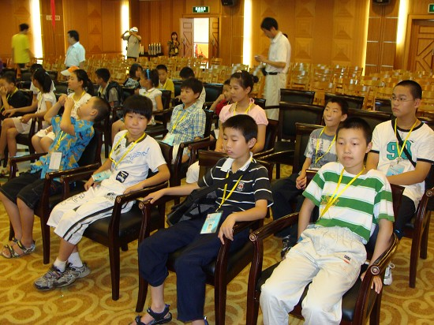
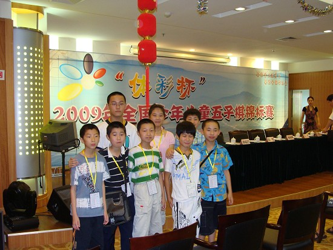
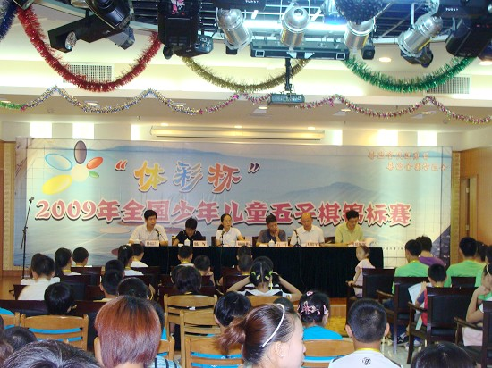
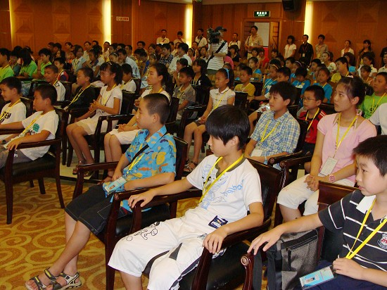
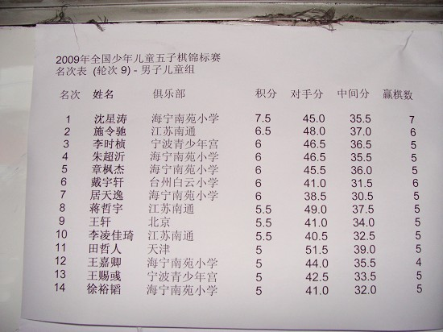
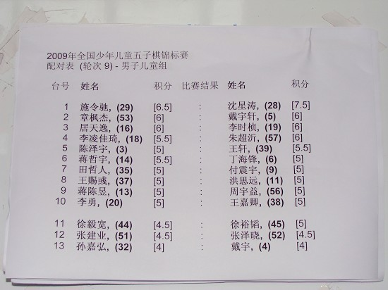
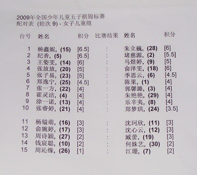
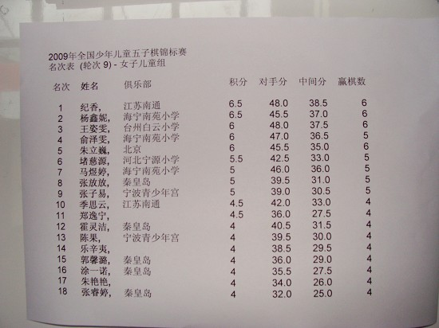

南通小选手参加第三届全国少年儿童五子棋比赛，跟踪报道
#1 南通小选手参加第三届全国少年儿童五子棋比赛，跟踪报道 作者：有志青年 发表时间：2009-8-8 0:14:08
1、遇到梅凡
梅凡老师的照片我在网上是看到过的，但是之前公布的名单中，并没有梅凡，所以我也没有想到梅凡会来，而戴晓涵老师我知道在浙江，我在总台遇到梅凡的时候，喊了一声“小天老师”没回应，我郁闷，于是又走近一点，喊了一声，戴晓寒老师。“对不起，我不是戴晓寒”，郁闷死了，您是？“我是梅凡”，恐怖呀，全国冠军到场，有眼不识泰山了，您是？“我是湖北队的领队”。笔直晕倒。
2、土豆老师
还是在总台，“土豆老师”，我先喊了一声，你是？“我是有志青年”，啊，你和照片不像。郁闷，我知道，土豆老师是说我又胖了。
3、杨春燕老师
用超级保姆形容很合适，“孩子们，排好队，我们去吃饭”一群娃娃，排着队，排第一个的孩子眼中还挂着泪水。
4、戴晓涵老师
沈瓒来了，还带来了戴晓涵老师，浙江赛冠军，我和沈瓒握手的时候，感觉压力比较大，不过如果我们说相声，绝对没有问题。戴晓涵老师是内向型的吧，话不多。
5、
6、顾炜老师
终于到了，嘿嘿，酒品一流，一桌人决定以后直接称呼顾九段，酒品看人品。
7、领导关心
南通市教育局体卫艺处处长、港闸区教育局局长、副局长，唐闸小学校长，四个领导从南通赶到了浙江，我压力大呀。
8、徐炳继老师
没想到这么年轻的感觉。
9、肖斌老师
很魁梧，说话很豪爽，典型的北方人
10、张钟元妹妹
我一开始还真以为是戴晓涵老师带来的福建裁判，后来一问才知道是张妹妹，自己只有15岁，还带两个小孩子，自己又做选手又做领队，还有张妹妹可是参加少年男子组。
11、伟鬼大哥
伟鬼大哥，用精干来形容错不了，今天可够忙的
12、帅哥段然
帅是天生的，后天再努力也没有用。段然可是此次河北队的教练哟，猛，没看到他们的小选手，应该也是帅哥们吧
［ 雨一直下 于 2009-8-8 9:06:29 时花20金币送鲜花一朵］
#2 Re:南通小选手参加第三届全国少年儿童五子棋比赛，跟踪报道 作者：雨一直下 发表时间：2009-8-8 9:07:26
预祝比赛圆满成功，各位老师们都辛苦了，赞一个。#3 Re:南通小选手参加第三届全国少年儿童五子棋比赛，跟踪报道 作者：有志青年 发表时间：2009-8-8 10:59:02
8日上午举行的开幕式，来自国家体育总局棋牌运动管理中心综合发展部的林丽梅副主任，以及浙江棋类协会、宁波体育局、宁波青少年宫的相关领导出席了开幕式。
南通市教育局体卫艺处的虞谷生处长、港闸区教育局夏伟山局长、严汉志副局长、唐闸小学朱刚校长也从南通赶到宁波观摩了开幕式。
此次共有来自全国13个省市的共计144名选手参加四个组别的比赛，南通的选手参加男子儿童及女子儿童组的比赛，其中男子儿童组共有选手60名，女子儿童组共有选手30名。
正式比赛下午1点开始，第一轮我们的小选手分别对阵来自浙江及河北的选手，让我们预祝第一轮的比赛取得好的成绩，第二轮的比赛将在下午3点开始。

会场，我们水平一般，但是开会不能迟到哟

先来个合影

开幕式

这时候的会场已经满满的了
#4 Re:南通小选手参加第三届全国少年儿童五子棋比赛，跟踪报道 作者：茗弈小刀 发表时间：2009-8-8 11:06:44
啊，徐老師也去了？有志哥不要把顧老師灌醉了哈。
#5 Re:南通小选手参加第三届全国少年儿童五子棋比赛，跟踪报道 作者：有志青年 发表时间：2009-8-8 11:11:33
顾老师昨晚睡的很香，哈哈
#6 Re:南通小选手参加第三届全国少年儿童五子棋比赛，跟踪报道 作者：自来自去 发表时间：2009-8-8 12:15:04
呵呵，来赞一个，戴晓涵还是短裤加凉鞋的造型么，呵呵#7 Re:Re:南通小选手参加第三届全国少年儿童五子棋比赛，跟踪报道 作者：有志青年 发表时间：2009-8-8 12:33:22
引用：你回答完全正确
原文由 自来自去 发表于 2009-8-8 12:15:04 :
呵呵，来赞一个，戴晓涵还是短裤加凉鞋的造型么，呵呵

#8 Re:南通小选手参加第三届全国少年儿童五子棋比赛，跟踪报道 作者：屏蔽 发表时间：2009-8-8 12:37:50
戴晓涵内向嘛？……
顾炜怎么也去了，没关注，有上海队？
#9 Re:南通小选手参加第三届全国少年儿童五子棋比赛，跟踪报道 作者：有志青年 发表时间：2009-8-8 14:13:03
好消息是，第一轮南通8名选手均取得1分，不知后面孩子们的状态如何，对手状态如何，孩子们的水平和对手的水平相比如何，一切不确定的因素太多了。#10 Re:南通小选手参加第三届全国少年儿童五子棋比赛，跟踪报道 作者：风趣幽默 发表时间：2009-8-8 16:22:45
有志辛苦了！南通的小朋友们加油啊！#11 Re:南通小选手参加第三届全国少年儿童五子棋比赛，跟踪报道 作者：有志青年 发表时间：2009-8-8 16:40:56
第二轮的比赛情况如下：
蒋哲宇胜了北京的王轩
李凌佳琦胜了海宁的徐裕滔
施令驰和了海宁的朱超沂
唐铸胜自己队员陈泽宇
其他选手第二轮输了
纪香输了，进了对方的研究
#12 Re:南通小选手参加第三届全国少年儿童五子棋比赛，跟踪报道 作者：有志青年 发表时间：2009-8-8 16:59:52
=======上图对应的爱五子棋谱代码如下，以便你拆解：========
h8h7h10i6i10i7g7g8j5i9i8j7k8j9j10k10k9f9e10i11k7l8i5k5l11f8f11d9e8e9g9f6f7c9b9d8e7c7b6d6d7g6e6c8c6e5b5a4b8b7f4
======================================================
朱超沂vs施令驰 和
#13 Re:南通小选手参加第三届全国少年儿童五子棋比赛，跟踪报道 作者：天堂的银元 发表时间：2009-8-8 17:15:49
期待进一步的报道#14 Re:南通小选手参加第三届全国少年儿童五子棋比赛，跟踪报道 作者：有志青年 发表时间：2009-8-9 7:41:27
此次比赛，最有冠军相的是浙江海宁的代表队，那个整体实力强悍的很，陈新老师也赶到了。
这么多高手都来了，全是名人呀。
#15 Re:南通小选手参加第三届全国少年儿童五子棋比赛，跟踪报道 作者：有志青年 发表时间：2009-8-9 10:05:06
第三轮结束，除了内讧的一对选手，共计7位选手胜出
目前我队2个3分、1个2.5分、5个2分
孩子们加油
#16 Re:南通小选手参加第三届全国少年儿童五子棋比赛，跟踪报道 作者：有志青年 发表时间：2009-8-10 6:17:50
第四轮，多名选手惨遭失败，蒋哲宇继续胜出，坚持了四连胜，让27刀个家伙激动的跳起来。
第五轮，蒋哲宇漏杀败给了沈星涛，李凌佳琦败给了张建业，其余选手均胜出。
第四轮中，季思云被北京的朱立巍开云月交换却没有杀出来丢了一分。
第五轮，纪香对朱立巍，依然是朱立巍开局，结果还是开云月，被纪香交换过来后轻松杀掉。
第六轮的比赛，对手依然强大，目前南通队，两个4分，一个3.5，其余均是3分。
#17 Re:南通小选手参加第三届全国少年儿童五子棋比赛，跟踪报道 作者：风趣幽默 发表时间：2009-8-10 8:05:52
太棒了！比我以前预计的好多了！孩子们，继续加油 啊！#18 Re:南通小选手参加第三届全国少年儿童五子棋比赛，跟踪报道 作者：有志青年 发表时间：2009-8-10 9:48:56
第六轮结束
纪香完胜浙江台州的王姿雯，终结了王姿雯的五连胜。目前纪香得5分
季思云和了，得3.5分
儿童男子组：
蒋哲宇胜浙江海宁的朱超沂，得5分
除去陈泽宇本轮没有得分之外，其余均胜出，共计4个4分，1个3分。
老蔡，真的太出乎自己的预计了，期待孩子下午继续正常发挥。
原来现实对弈，不确定因素太多了，有好多有趣的故事呢。
听说，昨晚南通电视台播放了我们出发前的采访报道了?
#19 Re:南通小选手参加第三届全国少年儿童五子棋比赛，跟踪报道 作者：有志青年 发表时间：2009-8-10 22:09:47
为期四天的比赛，共计比9轮，截至目前已经结束了8轮，无论对哪个孩子来说，每局2小时高强度的思考，那是异常艰难的，但这帮孩子用自己的行动证明了自己，这样的孩子在学习遇到难题时，还有什么可以担心的呢？我们本着学习的态度首次参加国家体育总局组织的全国少年儿童五子棋比赛，给自己定的目标是进团体前六。 八轮过后，我们的孩子取得了异常优异的成绩，截至八轮为止，我们是坐三、望二、争一，这个成绩超过我们的预计太多了，因为南通低调参赛，当我们以非洲黑马的姿态走到目前这个成绩时，个别地区起身追击的时候已经来不及了。
此次比赛分为少年男子组、少年女子组、儿童男子组、儿童女子组，我区的八名同学有6名参加儿童男子组，2名参加儿童女子组。
这些孩子是唐闸小学的纪香、蒋哲宇、施令驰、蒋陈昱、陈泽宇，天生港学校的季思云，曙光小学的唐铸，港闸区实验小学的李凌佳琦。
此次带队的是唐闸小学的顾亮老师、天生港学校的蒋根喜老师、秦灶中学的周正华以及教育局的陈有志。
我们的对手来自北京、天津、秦皇岛、湖南、石家庄、吉林、湖北、安徽、四川、云南、河南及浙江和江苏，我区的8名选手组成的代表队是来自江苏的唯一一支队伍。




#20 Re:南通小选手参加第三届全国少年儿童五子棋比赛，跟踪报道 作者：风趣幽默 发表时间：2009-8-10 23:07:53
南通是最黑的黑马啊！可喜可贺！期待明天的决赛！希望纪香和施令弛再接再历！#21 Re:南通小选手参加第三届全国少年儿童五子棋比赛，跟踪报道 作者：黄药师 发表时间：2009-8-12 7:37:31
离不开楼上的指导啊！